בשבוע שעבר לחצנו Load וטענו את הנתונים כמו שהם. היום לוחצות על הכפתור השני, Transform Data,
ונכנסות לחדר שבו רואים בשנייה אחת מה שבור בטבלה של אלפי שורות. מחליטות על הסוג של כל עמודה, בוחנות את הדאטה בארבעה כלים, ומתקנות תיקונים ראשונים.
שאלה
←
איסוף נתונים
←
טיוב והכנה
←
ניתוח
←
הצגה
←
החלטה
לא היית במיט?
היום כל השיעור יחד, אז כולו בהקלטה. עברי על שלבים 0–1 עם ההקלטה, ולחצי יחד איתה במחשב שלך. חשוב לסיים: שיעור 3 ממשיך מהקובץ תדלוק.
בכל כלי נתונים, מאקסל ועד המערכות של חברות ענק, הנתונים עוברים שלוש תחנות בדרך לדוח. באנגלית קוראים לזה ETL.
EExtract · מוציאותלוקחות את הנתונים מהמקור. אצלנו: הקובץ שתחנת הדלק שלחה.
בפאוור BI: Get data
←
TTransform · מתקנותבודקות מה שבור ומתקנות, לפני שמישהו מחשב משהו.
בפאוור BI: פאוור קוורי (Transform Data)
←
LLoad · טוענותמעבירות את הנתונים המתוקנים לדוח, ושם בונות גרפים.
בפאוור BI: Close & Apply
מה עשינו בשבוע שעבר? לחצנו Load ישר מה־Navigator: E ומיד L, בלי T.
הנתונים הגיעו לדוח כמו שהם, עם כל מה שבור בהם. אם הגרף על המסד שלכן יצא מוזר, זו הסיבה.
למה ה־T הוא הלב? בנתוני התדלוק יש 2,905 תדלוקים. באחד מהם כתוב 50,000 ליטר, ואף רכב לא מתדלק כמות כזאת.
בלי T, הממוצע בדוח הוא 57 ליטר לתדלוק. בלי השורה הזו, 40. שורה אחת מתוך כמעט 3,000 שינתה את המספר שהתחנה תחליט לפיו.
י״ב: ה־T הוא פרק הטיוב בעבודה שלכן. י״א: ה־T הוא השלב ״טיוב והכנה״ בפס מחזור הנתונים שבראש הדף.
ב־T יש ארבעה סוגים של פעולות. לפני כולן, בוחנות: מה יש בטבלה ומה שבור בה. היום, אחרי הבחינה, נוגעות בשתיים:
לנקותמוחקות כפילויות, שורות ריקות ועמודות שאין בהן מידע.
להמירקובעות לכל עמודה את הסוג הנכון: טקסט, מספר, כסף או תאריך.
לסנןמשאירות רק את מה שהשאלה צריכה: תקופה, סוג, אזור.
שלב 1 · עושות יחד · תדלוק רכביםמכירות את פאוור קוורי, ובוחנות בו את הדאטה
תחנת דלק רשמה כ־2,900 תדלוקים. לפני שבונות עליהם דוח, בודקות אם אפשר לסמוך עליהם. היום כל השיעור יחד, ואתן לוחצות איתי במחשב שלכן.
חלק מהצילומים צולמו על נתוני ההזמנות, ולכן שמות העמודות בהם שונים. החלונות והכפתורים זהים.
1.1מכירות את העמודות, באקסל
יודעות מה יש בכל אחת מעשר העמודות, ומה הניחוש שלכן: מספר, טקסט או תאריך.
איך עושים
מורידות את הקובץ תדלוק רכבים.xlsx, ומעבירות אותו מ״הורדות״ לתיקייה Power BI\שיעור 2.
פותחות אותו באקסל.
עוברות על העמודות משמאל לימין, ולכל אחת אומרות: מה כתוב בה?
לכל עמודה מנחשות: מספר, טקסט או תאריך? זוכרות את הניחוש.
סוגרות את האקסל.
למה להתחיל באקסל? לפני שמתקנות, מכירות. מי שיודעת מה אמור להיות בעמודה, תזהה מהר מה לא שייך לה.
1.2נכנסות לפאוור קוורי
חלון Power Query Editor פתוח על נתוני התדלוק.
איך עושים
בפאוור BI: Home › Get data › Excel workbook.
בוחרות את תדלוק רכבים.xlsx ולוחצות Open.
ב־Navigator מסמנות את הטבלה טבלת_תדלוקים.
לוחצות Transform Data. לא Load.
מה אמור להופיע?
חלון חדש, Power Query Editor, ובו ארבעה חלקים:
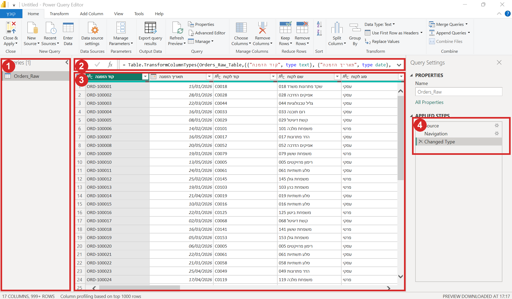
1 — השאילתות (כל טבלה היא שאילתה). 2 — שורת הנוסחה: מה השלב הנוכחי עושה. 3 — הנתונים. 4 — Applied Steps: יומן של כל מה שעשינו.
שני חלונות פתוחים. פאוור BI הוא החלון הראשי, ופאוור קוורי נפתח מתוכו.
סוגרות את פאוור קוורי רק דרך Close & Apply, כדי שהשינויים יגיעו לדוח.
פאוור קוורי יושב גם בתוך אקסל (Data › Get Data). מה שלומדות כאן עובד גם שם.
1.3השאילתה והיומן
לשאילתה יש שם בעברית, ואתן יודעות מה כתוב ביומן ולמה.
איך עושים
ברשימת השאילתות משמאל, קליק כפול על השם טבלת_תדלוקים.
מקלידות תדלוקים ולוחצות Enter.
ב־Applied Steps מימין מסתכלות על שלושת השלבים: Source, Navigation, Changed Type.
לוחצות על Source, ורואות את הטבלה כפי שהייתה בשלב הזה.
לוחצות על השלב האחרון, וחוזרות.
השאילתה לא מכילה את הנתונים. היא מתכון. כל פעולה נרשמת ביומן כשלב, ופאוור BI מריץ את כל השלבים מחדש בכל פעם שהנתונים מתעדכנים.
לא צריך לזכור מה עשינו. זה כתוב שם.
הסדר קובע. כל שלב בונה על מה שלפניו. לחצתן על שלב באמצע ועשיתן פעולה? היא נכנסה לאמצע היומן. תמיד חוזרות לשלב האחרון לפני שממשיכות.
1.4סוגי נתונים: עשר עמודות, עשר החלטות
לכל עמודה יש הסוג הנכון, ואתן יודעות לנמק אותו. ובעמודה אחת קרה משהו.
איך עושים
מסתכלות על האייקון שליד שם כל עמודה: ABC טקסט, 123 מספר שלם, 1.2 מספר עשרוני, $ מספר עשרוני קבוע (לכסף), ולוח שנה לתאריך.
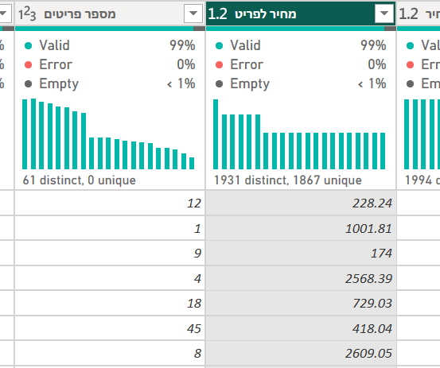
משוות לניחוש שלכן מהאקסל, בעזרת הטבלה למטה.
לוחצות על האייקון שליד קוד תדלוק.
בוחרות Text.
אם נפתח חלון, לוחצות Replace current. אם לא נפתח, הסוג כבר הוחלף.
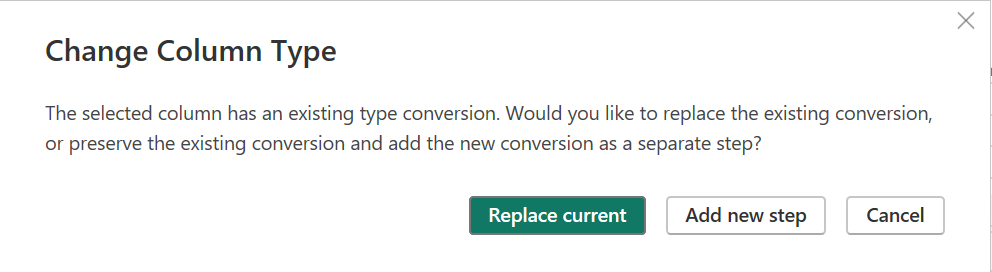
באותה דרך: קוד לקוח ולוחית רישוי ← Text.
ליטרים ← Decimal number.
מחיר לליטר ← Fixed decimal number.
אחרונה: תאריך ← Date.
מה אמור להופיע?
האייקונים כמו בטבלה. ובעמודת התאריך, פס אדום דק מתחת לכותרת, ובשורה 8 כתוב Error. מה היה שם? נגלה ב־1.7.
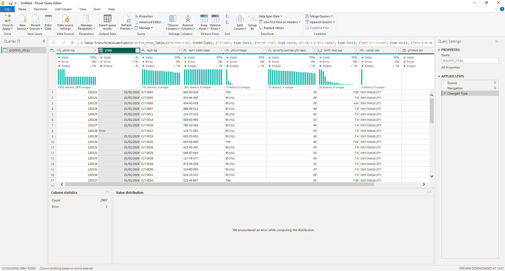
בעמודת התאריך: Error 1. ההתפלגות למטה לא מצליחה להיות מחושבת, בגלל השגיאה.
עמודה
הסוג הנכון
למה
קוד תדלוק · קוד לקוח · לוחית רישוי
Text · ABC
קוד הוא שם, לא כמות. אף אחת לא מסכמת קודים.
תאריך
Date · לוח שנה
אין בקובץ שעות, ולכן Date ולא Date/Time.
קטגוריית דלק · שם התחנה · שם המתדלק · סוג תשלום
Text · ABC
מילים. פאוור BI כבר ניחש נכון, ולא נוגעות.
ליטרים
Decimal · 1.2
היום כל המספרים שלמים, אבל מחר יגיע תדלוק של 35.5 ליטר.
מחיר לליטר
Fixed decimal · $
זה כסף. ה־$ לא אומר דולרים, הוא אומר ״כסף״.
הכלל: ״הייתי מסכמת את זה?״ לא? אז זה טקסט, גם אם כתובות בו רק ספרות. מיקוד, תעודת זהות וטלפון הם טקסט.
למה זה חשוב? מספר ששמור כטקסט אי אפשר לסכם, ותאריך ששמור כטקסט אי אפשר לפרק לחודשים.
פאוור BI מנחש את הסוג לבד, בשלב Changed Type. זה עוזר, אבל הוא מנחש לפי מדגם, ולכן בודקות.
והסוג הנכון גם חושף בעיות: כל עוד התאריך היה ״כל דבר״, אף תא לא נראה שגוי.
Replace current או Add new step?
Replace current מתקן את הניחוש של Changed Type במקום. Add new step מוסיף שלב חדש ליומן, שעושה את אותו הדבר.
בוחרות Replace current, כדי שהיומן יישאר קצר. החלון הזה עולה רק בפעם הראשונה.
כל הסוגים ברשימה
מעבר לחמשת הסוגים שבטבלה יש גם: Percentage (אחוז), Date/Time (תאריך ושעה), Time (שעה),
Duration (משך זמן), True/False (כן או לא), ו־Binary (קבצים ותמונות, כמעט לא נשתמש).
Using Locale הוא בעיקר לתאריכים ולסכומים שנכתבו בפורמט של מדינה אחרת.
1.5טוענות לדוח, וחוזרות
הנתונים בדוח, ופאוור קוורי פתוח שוב.
איך עושים
Home › Close & Apply (הכפתור הראשון משמאל).
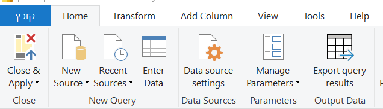
קופצת הודעה על שגיאה. לוחצות Close.
חוזרות לפאוור קוורי: Home › Transform data.
מה אמור להופיע?
הודעה שכל השורות נטענו, ושיש שגיאה אחת. זה צפוי: זו הבעיה שהסוג חשף ב־1.4.
שלושה כפתורים.Apply טוען לדוח ונשאר בפאוור קוורי. Close סוגר בלי לטעון.
Close & Apply עושה את שניהם, ובו משתמשות.
1.6ארבעה כלים לבחון את הדאטה
מעל כל עמודה רואות כמה תקין, כמה שגוי וכמה ריק, על כל השורות, ויודעות לקרוא את הפרופיל של עמודה.
איך עושים
פותחות את הלשונית View.
מסמנות שלוש תיבות: Column quality, Column distribution, Column profile.
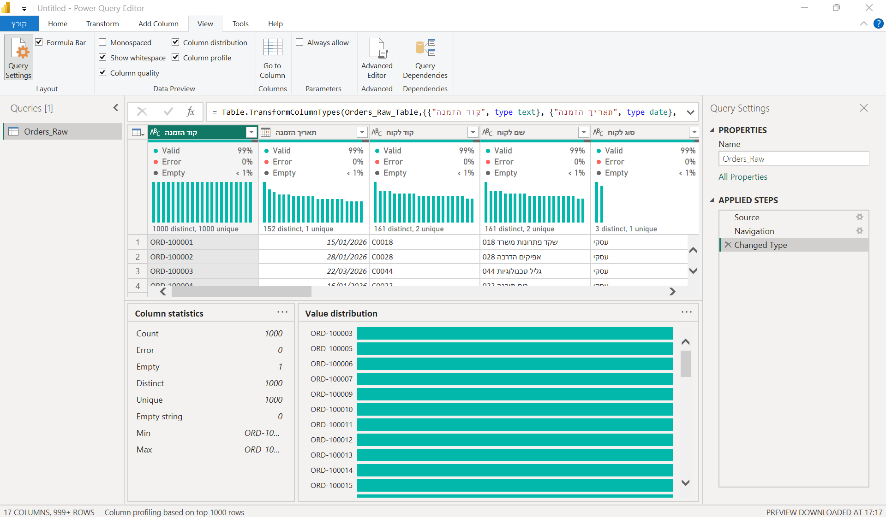
מעל כל עמודה: כמה תקין (Valid), כמה שגוי (Error), כמה ריק (Empty). למטה: סטטיסטיקה של העמודה המסומנת.
מסתכלות על הפס הצבעוני מתחת לכל כותרת. איפה יש אפור? איפה אדום?
למטה משמאל לוחצות על המשפט Column profiling based on top 1000 rows.
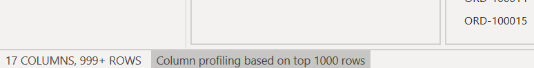
על המשפט הזה לוחצות.
בוחרות Column profiling based on entire data set.
לוחצות על הכותרת קוד תדלוק, ומסתכלות למטה ב־Column statistics.
מה אמור להופיע?
בקוד תדלוק: Count 2907 · Empty 2 · Distinct 2902 · Unique 2897.
קוד תדלוק אמור להיות ייחודי, ולכן ההפרש הזה אומר שיש קודים שמופיעים פעמיים.
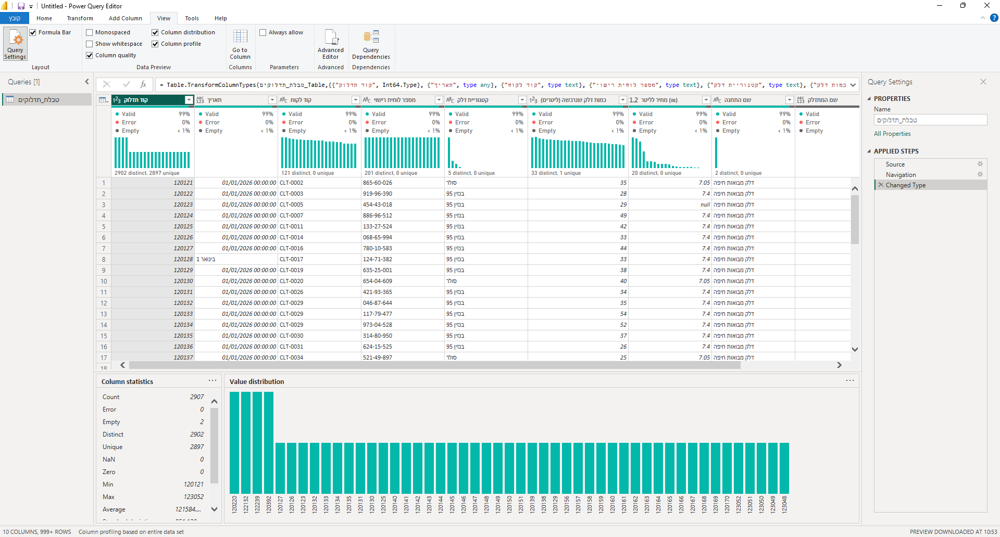
ב־Value distribution: ארבעת העמודים הגבוהים משמאל הם ארבעת הקודים שמופיעים פעמיים.
הכלי
מה רואים בו
מה מחפשות
הפס הצבעוני
קו דק מתחת לכותרת
ירוק תקין, אפור ריק, אדום שגיאה. בשנייה אחת רואות איפה הבעיה.
Column quality
Valid · Error · Empty, באחוזים
עמודה עם הרבה ריקים, או עם שגיאה אחת שמסתתרת.
Column distribution
גרף עמודות קטן: כמה פעמים כל ערך מופיע
בעמודת קוד אמור להיות פס שטוח. עמוד גבוה = ערך שחוזר. ועמודה שכולה עמוד אחד: יש בה ערך אחד בלבד.
מזהה ש־Distinct שלו קטן מ־Count. מספר שלא הגיוני ב־Min או ב־Max.
Distinct מול Unique.Distinct סופר כמה ערכים שונים יש. Unique סופר כמה ערכים מופיעים פעם אחת בדיוק.
בעמודה שאמורה להיות ייחודית, כמו קוד, שניהם צריכים להיות שווים למספר השורות.
View נשאר, entire data set לא. את שלוש התיבות ב־View מסמנות פעם אחת, והן נשארות.
אבל entire data set חוזר ל־1,000 שורות בכל פתיחה של פאוור קוורי. בלי זה, שגיאה בשורה 1,500 לא תופיע, ונחשוב שהכול תקין. הדבר הראשון שבודקות, כל פעם.
1.7לבודד את מה שחשוד, ולהסתכל
יודעות מה כתוב בתא השגוי, אילו קודים כפולים, ואילו תדלוקים בלי מחיר. והיומן נקי משלבי בדיקה.
איך עושים
לוחצות על הכותרת תאריך.
Home › Keep Rows › Keep Errors.
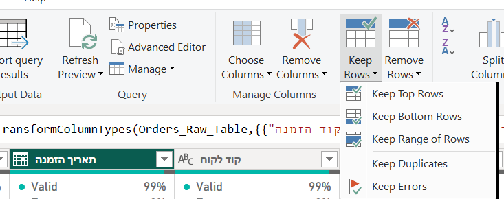
לוחצות על התא שכתוב בו Error, ליד המילה ולא עליה. למטה מופיע מה היה כתוב בתא.
ב־Applied Steps מוחקות את השלב Kept Errors, ב־X שלידו. לחצתן על המילה עצמה ונוסף עוד שלב? מוחקות גם אותו.
לוחצות על הכותרת קוד תדלוק.
Home › Keep Rows › Keep Duplicates. מסתכלות.
מוחקות את השלב ב־X.
לוחצות על החץ שבכותרת מחיר לליטר, ומשאירות מסומן רק את (null). מסתכלות.
מוחקות את השלב ב־X.
מה אמור להופיע?
בשגיאה: שורה אחת, ולמטה מה שהיה כתוב בתא, טקסט שהוא לא תאריך.
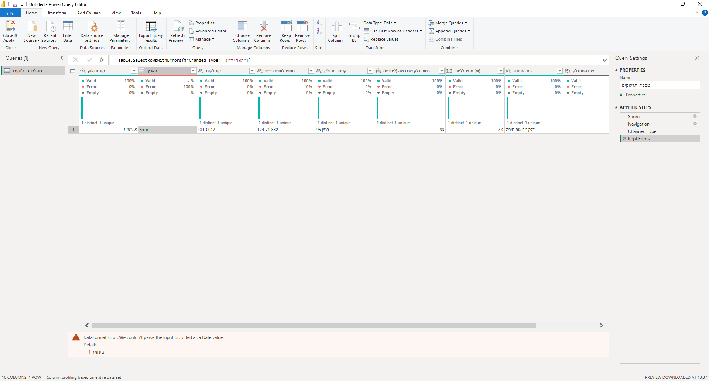
בכפילויות: עשר שורות. ארבעה קודים, כל אחד פעמיים, ועוד שתי השורות הריקות, שגם הן ״זהות״ זו לזו.
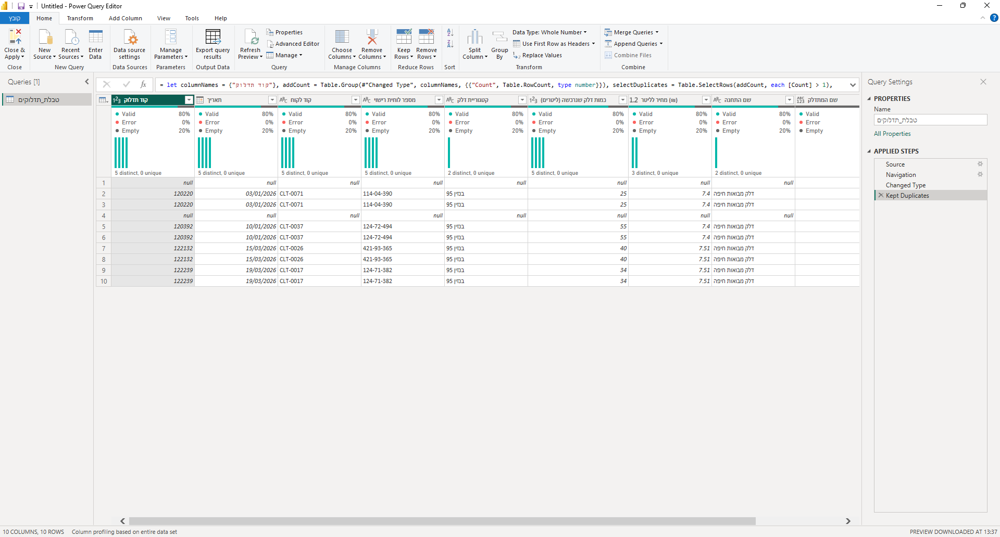
במחיר: שמונה שורות. ובסוף, ביומן, רק השלבים שהיו לפני 1.7.
פילטר בפאוור קוורי מוחק באמת. באקסל סינון רק מסתיר. כאן הוא שלב ביומן, ומה שסוננו לא יגיע לדוח.
שכחתן את שלב הבדיקה? בדוח תהיה שורה אחת. מסתכלות, ומוחקות את שלב הבדיקה.
מה מצאנו? רושמות לעצמכן את כל מה שמצאתן ב־1.6 וב־1.7. היום מתקנות רק מה שנוגע לשורות ולעמודות שלמות.
את הערכים, השגיאה והמחיר החסר, מתקנות בשבוע הבא, כי שם צריך להחליט, ולא רק ללחוץ.
1.8תיקונים ראשונים: עמודות, ריקות, כפילויות
שתי עמודות פחות, בלי שורות ריקות ובלי קודים כפולים, וביומן שלושה שלבים חדשים.
איך עושים
לוחצות על הכותרת שם המתדלק.
מחזיקות Ctrl ולוחצות על שם התחנה.
Home › Remove Columns.
Home › Remove Rows › Remove Blank Rows.
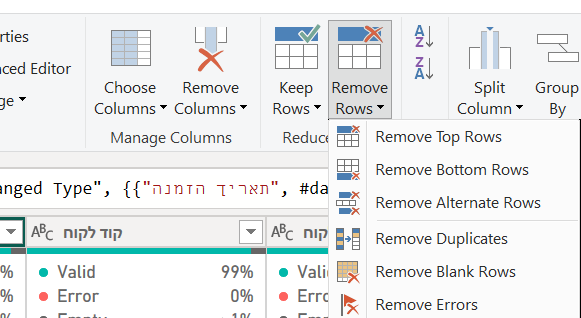
לוחצות על הכותרת קוד תדלוק. רק היא מסומנת.
Home › Remove Rows › Remove Duplicates.
מסתכלות שוב בפרופיל של קוד תדלוק, ומשוות למה שהיה ב־1.6.
ב־Applied Steps לוחצות על השלב שלפניRemoved Duplicates.
לוחצות שוב על השלב האחרון.
מה אמור להופיע?
בקוד תדלוק: Count 2901 · Distinct 2901 · Unique 2901.
כשלוחצות על השלב שלפני Removed Duplicates, הכפילויות חוזרות. בשלב האחרון הן נעלמות שוב.
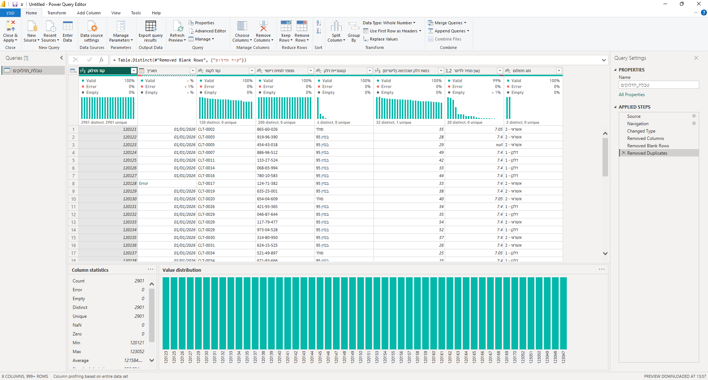
ההתפלגות שטוחה: כל קוד מופיע פעם אחת.
Unique עלה, אבל מחקנו שורות. איך? לא נוסף כלום. כל אחד מארבעת הקודים הכפולים הופיע פעמיים, ולכן לא נספר כ״יחיד״.
מחקנו את העותק השני, והראשון נשאר לבד: הוא הפך ליחיד. זו בדיוק המטרה. בעמודת מזהה מטויבת, Count = Distinct = Unique.
כל תיקון הפיך ורשום. באקסל, מחיקה היא מחיקה. כאן התיקון הוא שלב ביומן: אפשר לחזור אחורה, לראות מה היה,
ולמחוק את השלב אם טעינו. והקובץ המקורי לא משתנה בכלל.
מסמנות רק את עמודת הקוד. אם מסומנות כל העמודות, נמחקות רק שורות שזהות בכל העמודות, ולפעמים קופצת שגיאה.
״ריקה״ זו שורה ריקה כולה.Remove Blank Rows לא נוגע בשורה שחסר בה רק מחיר. אותה נפגוש בשבוע הבא.
1.9שומרות
הקובץ תדלוק שמור, ובשבוע הבא ממשיכות ממנו.
איך עושים
Home › Close & Apply. ההודעה עדיין קופצת, הפעם 2,901 rows loaded. 1 error. לוחצות Close.
File › Save as › Browse this device.
בוחרות את התיקייה Power BI\שיעור 2, ושומרות בשם תדלוק.
E, T, L, ונסגר המעגל. השגיאה עוד שם, כי עוד לא תיקנו אותה. בשבוע הבא.
צריכות לחזור לפאוור קוורי? Home › Transform data.
✔ הכרנו את פאוור קוורי, בחנו את הדאטה, ותיקנו תיקונים ראשונים. י״ב:עכשיו על המסד שלכן ←
שלב 3 · י״ב בלבד · עד השיעור הבאבדיקה של כל המשתנים במסד שלכן י״ב
טבלה שבה לכל עמודה במסד שלכן יש סוג, ריקים וייחודיות, ושלושה דברים שמצאתן.
בדיוק מה שעשינו יחד על התדלוק ב־1.4 וב־1.6, הפעם על המסד שלכן. עד כ־15 עמודות? עוברות על כולן. הרבה יותר מזה? בוחרות את 10 העיקריות, אלה ששאלת המחקר שלכן צריכה.
בודקות עמודה אחרי עמודה
איך עושים
פותחות את המסד שלנו - שיעור 1 (מהשבוע שעבר), ו־Home › Transform data.
אם לא שמרתן, טוענות מחדש, הפעם עם Transform Data.
פותחות את הלשונית View, ומסמנות את שלוש התיבות.
למטה משמאל לוחצות על Column profiling based on top 1000 rows, ובוחרות entire data set.
עוברות עמודה אחרי עמודה, וכל עמודה בודקות בארבע השאלות שבטבלה למטה.
לכל עמודה רושמות בטבלת ההגשה (למטה) מה פאוור BI ניחש, ומה הסוג הנכון.
לכל עמודה שהסוג שלה לא נכון: האייקון ליד השם ← הסוג הנכון ← Replace current.
הופיע Error אחרי שינוי סוג? Keep Rows › Keep Errors, מסתכלות מה כתוב, רושמות, ומוחקות את שלב הבדיקה. מתקנות בשבוע הבא.
Home › Close & Apply.
שומרות: File › Save.
מה בודקות
איפה רואים
מה מחפשות
סוג
האייקון שליד שם העמודה
מספר שמופיע כ־ABC. תאריך שהוא טקסט. קוד (מיקוד, ת״ז) שהפך למספר, ואיבד את האפסים שבהתחלה. את זה מתקנות.
פיזור
הגרף שמעל העמודה, ו־Value distribution
ערך אחד שקופץ מעל כל השאר. קטגוריה שכתובה בשתי צורות. מספר שלא הגיוני (גיל 200, מחיר שלילי).
שגיאות וריקים
Valid · Error · Empty
איפה יש Error, איפה Empty, ובכמה שורות.
ייחודיות
Count · Distinct · Unique
עמודה שאמורה להיות ייחודית (מזהה) ו־Distinct שלה קטן מ־Count. ועמודה שכמעט כולה ערך אחד.
מה מגישות בקלאסרום
צילום מסך של פאוור קוורי, עם הפרופיל פתוח ועם שלבי ה־Changed Type ביומן.
טבלת העמודות, שורה לכל עמודה (בגוגל דוקס או באקסל):
עמודה
מה פאוור BI ניחש
הסוג הנכון
Empty
Distinct / Unique
הערה
קוד תדלוק
123
ABC · Text
2
2902 / 2897
מזהה, ויש כפולים
השורה בטבלה היא דוגמה מהתדלוק.
שלושה דברים שמצאתן, משפט לכל אחד. בשבוע הבא הם יהיו השורות הראשונות בטבלת התיעוד.
entire data set תוקע את המחשב? במסד גדול מאוד זה קורה. נשארות על 1,000 שורות, וכותבות את זה בהגשה.
לא מצאתן אף בעיה? זה קורה במסדים ממשלתיים מסודרים. אז מחפשות בעיות עדינות יותר:
עמודה שכמעט כולה ריקה, קטגוריה שכתובה בשתי צורות, מספר שלא נראה הגיוני. ואם עדיין אין, כותבות את זה, עם הצילום שמוכיח.
המסד שלכן מגיע בכמה קבצים, אחד לכל שנה?
לא מתחילות לתקן. קודם מאחדות את כל השנים לטבלה אחת, ורק אחר כך בודקות ומטייבות, פעם אחת לכל השנים.
את האיחוד עושות איתי, בזמן הפתוח אחרי השיעור או בפגישה האישית. עד אז בודקות שכל הקבצים נפתחים, ושבכולם אותן עמודות.
נתקעתי
כל אלה קרו למורות בקורס המקורי, או לנו כשהכנו את השיעור.
לחצתי Load במקום Transform Data
לא נורא. Home › Transform data פותח את פאוור קוורי על אותם נתונים.
אין לי את Column profile
הוא בלשונית View, לא ב־Home. מסמנות את שלוש התיבות.
המספרים שלי שונים מה־✔
כמעט תמיד: בתחתית כתוב עדיין top 1000 rows. לוחצות ועוברות ל־entire data set.
חשוב: בכל פעם שפותחים את פאוור קוורי מחדש, זה חוזר ל־1,000. בודקות שוב.
אחרי הכפילויות לא יצא 2901
שני דברים לבדוק: ב־Remove Duplicates סומנה רק העמודה קוד תדלוק. וביומן יש Removed Blank RowsלפניRemoved Duplicates.
יצא 2902? כנראה הסדר הפוך, ונשארה שורה ריקה אחת.
הטבלה ריקה, או שנשארה בה שורה אחת
נשאר ביומן שלב בדיקה מ־1.7 (Kept Errors, Kept Duplicates או Filtered Rows). מוחקות אותו ב־X.
Remove Duplicates נתן שגיאה
כנראה סומנו כל העמודות. לוחצות על הכותרת קוד תדלוק בלבד, ומנסות שוב.
הסוגים השתנו לבד, בלי שביקשתי
זה השלב Changed Type: פאוור BI מנחש את הסוגים לבד. זה עוזר, ולא צריך לבטל. רק בודקות שהניחוש נכון.
טענתי את הטבלה פעמיים, או בטעות
בדוח, בחלונית Data: קליק ימני על הטבלה ← Delete from model. האקסל לא נפגע.
אין כפתור לשינוי סוג, או שהוא נראה אחרת
במסך קטן הכפתורים מתכווצים לאייקון עם חץ קטן. הדרך הבטוחה: האייקון שליד שם העמודה עצמה.
בפרופיל של התאריך כתוב Error 0, או ״We encountered an error while computing the distribution״
על כל הנתונים, ובעמודה עם שגיאה, החישוב לוקח כמה שניות. מחכות. ה־Error יעלה ל־1. ההודעה על ההתפלגות נשארת, כי אי אפשר לצייר התפלגות כשיש בעמודה שגיאה.
קפצה הודעה על שגיאות אחרי Close & Apply
זה צפוי היום. זו השגיאה בתאריך, שהופיעה כשהפכנו אותו ל־Date. לוחצות Close. בשבוע הבא מתקנות אותה.
סגרתי את פאוור קוורי ב־X, ועכשיו יש פס צהוב
השינויים לא נשמרו בדוח. לוחצות על Apply changes בפס הצהוב.
לחצתי על שלב באמצע היומן, ועכשיו הכול נראה אחרת
הטבלה מציגה את הנתונים כפי שהיו באותו שלב. לוחצות על השלב האחרון ברשימה. פעולה חדשה, כשמסומן שלב באמצע, תיכנס לאמצע היומן.
Ctrl+C / Ctrl+V לא עובדים
נכון. פאוור קוורי הוא לא אקסל: לא מקלידים בתאים ולא מדביקים. כל שינוי נעשה בפעולה מהתפריט, וכך הוא נרשם ביומן.